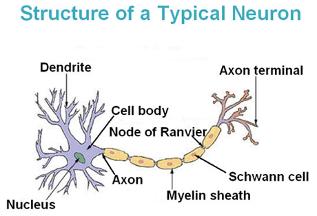
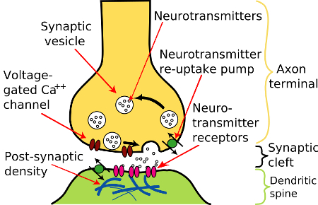
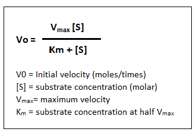
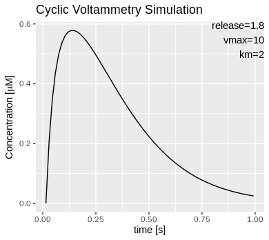
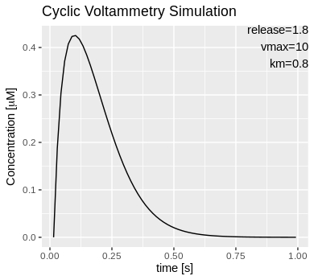
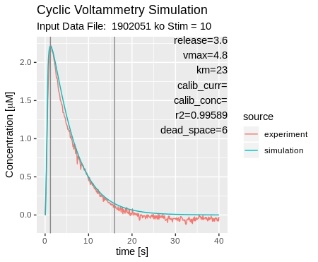
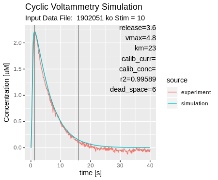

- Dr. David Sulzer, Principal Investigator
- Jai
- Dr. Mahalakshmi Somayaji, Post-Doctoral Researcher
Data Science in Context
Sulzer Neuroscience Laboratory at Columbia University
Jai Jeffryes
Data analyst and programmer
Dopamine kinetics
 
[1]: Typical neuron: Public Domain, https://commons.wikimedia.org/w/index.php?curid=254226 [2]: Vesicles: Creative Commons, https://commons.wikimedia.org/w/index.php?curid=4001388
Random Walk
- Release
- Diffusion
- Reuptake

Michaelis-Menten Equation
- Reuptake

Simulation of DA concentration
 
Experimental data
- Stimulate each two minutes.
- Amphetamine begins in fourth stimulus.
- Biological variability.
- DA concentration is net of release and reuptake.

Fitting the model
Infer kinetics of DA
- Release
- km (reuptake)
- R-squared
 

Wrap up
- Mechanism of AMPH-evoked DA release.
- Controlled experiment using genotypes.
- Publication.
- Rwalk package on GitHub: https://github.com/pnojai/rwalk